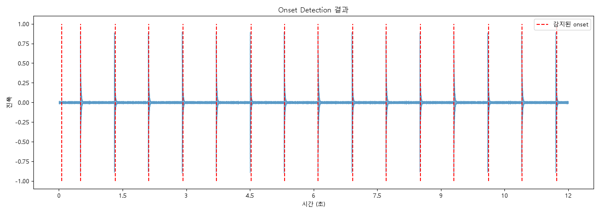

- 원곡과 내 기타 연주를 비교해 박자 정확도를 %로 계산하는 프로그램을 만들기로 함
- 1단계 목표: Python librosa의 onset detection이 실제로 잘 동작하는지 먼저 검증하기
- 이번 주까지 샘플 음원으로 이 부분을 테스트하기로 계획했었음
정답을 미리 알고 있는 클릭 트랙(0.8초 간격, 총 15개 클릭)을 만들어서 librosa가 정확히 감지하는지 검증했습니다.

| 1단계 | 원곡 음원과 내 연주 음원 각각에서 onset 시각 리스트를 뽑음 |
|---|---|
| 2단계 | 원곡의 각 onset마다 내 연주에서 가장 가까운 시각을 찾아 시간차 계산 |
| 3단계 | 시간차가 허용 오차(예: ±100ms) 이내면 "맞음"으로 판정 |
| 4단계 | 정확도(%) = 맞은 개수 ÷ 원곡 onset 총개수 × 100 |
결론: 대부분 되지만, 악기마다 정확도 체감이 달라요.
onset_detect()는 "소리 에너지가 갑자기 확 커지는 지점"을 찾는 원리라서 악기 종류를 안 가리고 일단 작동합니다. 다만 악기의 소리 특성(공격성, attack)에 따라 정확도 차이가 있습니다.
| 악기 | onset 검출 난이도 | 이유 |
|---|---|---|
| 기타, 베이스 (피킹) | 쉬움 | 소리가 팅 하고 갑자기 시작됨 (percussive) |
| 건반(피아노) | 쉬움~보통 | 타건 순간 에너지가 급증하지만, 페달 사용 시 여러 음이 겹쳐 애매해질 수 있음 |
| 신디사이저(패드류) | 어려움 | 소리가 서서히 커지는(느린 attack) 경우가 많아 시작점이 애매함 |
| 신디사이저(리드/펄스류) | 쉬움 | attack이 빠른 신스 사운드는 기타처럼 잘 잡힘 |
즉, "공격적으로 시작하는 소리(percussive)"는 다 잘 잡히고, "서서히 커지는 소리(pad류)"는 어렵다는 것이 핵심입니다. librosa의 onset_detect()에는 onset_envelope를 커스텀할 수 있는 옵션도 있어서, 필요하면 악기별로 튜닝할 수 있습니다.